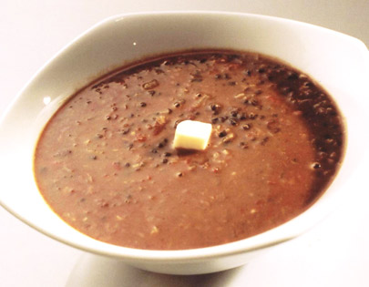

Dal Makhani
Ingredients
Whole black gram (sabut urad) 1/2 cupRed kidney beans (rajma) 2 tablespoons
Salt to taste
Red chilli powder 1 teaspoon
Ginger chopped 2 inch pieces
Butter 3 tablespoons
Oil 1 tablespoon
Cumin seeds 1 teaspoon
Garlic chopped 6 cloves
Onion chopped 1 large
Green chillies slit 2
Tomatoes 2 medium
Garam masala powder 1 teaspoon
Method Preparation
Pick, wash and soak sabut urad and rajma overnight in three cups of water. Drain. Pressure cook sabut urad and rajma in three cups of water with salt and half the red chilli powder (you can add half the ginger too if you wish) for three whistles. Open the lid and see if the rajma is totally soft. If not cook on low heat till the rajma becomes totally soft. Heat butter and oil in a pan. Add cumin seeds. When they begin to change colour, add ginger, garlic and onion and saute till golden. Add slit green chillies, tomatoes and saute on high heat. Add the remaining red chilli powder and saute till the tomatoes are reduced to a pulp. Add the cooked dal and rajma along with the cooking liquour. Add some water if the mixture is too thick. Add garam masala powder and adjust salt. Simmer on low heat till the dals are totally soft and well blended. Serve hot.